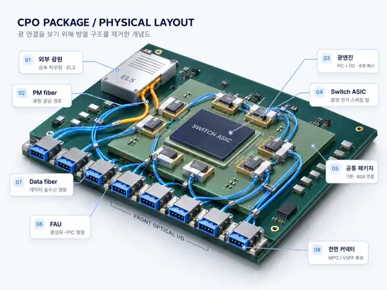

LSCNS / DCI / CPO
CPO Component Explorer
부품을 클릭하면 관련 업체를 확인하고, 업체를 선택하면 대표 역할·제품과 최근 CPO/AI 광연결 관련 기사를 확인할 수 있습니다.
CPO package / physical layout
클릭 가능한 CPO 패키지 개념도
첨부 이미지의 구성 방식을 참고한 개념도입니다. 실제 제품의 치수·배선·package stack을 그대로 나타내는 도면은 아닙니다.
Interactive architecture
부품을 눌러 업체 탐색
선택된 부품은 파란색 테두리로 표시됩니다.

Selected component
광엔진
Related companies